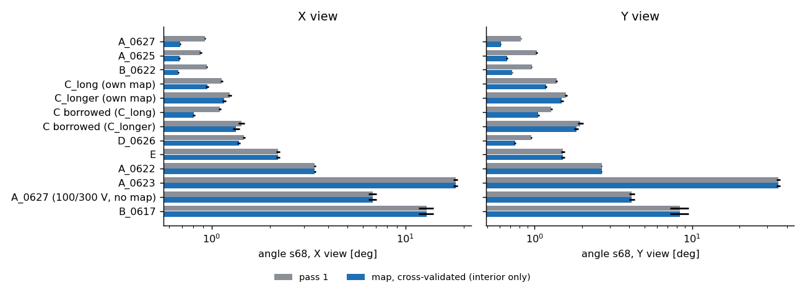
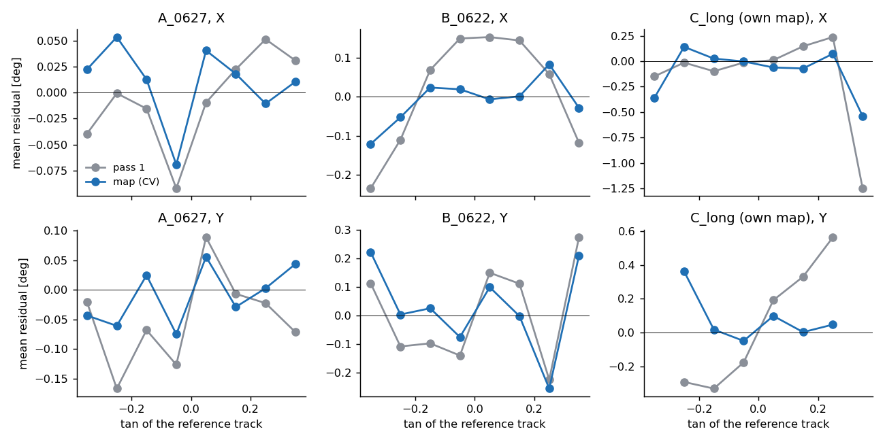
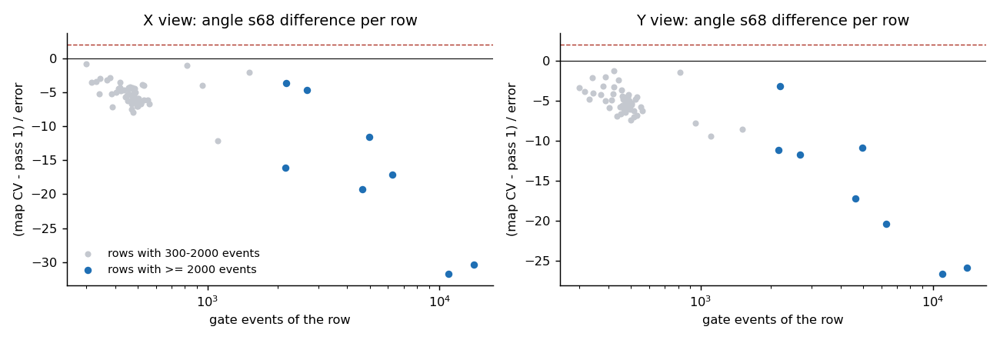
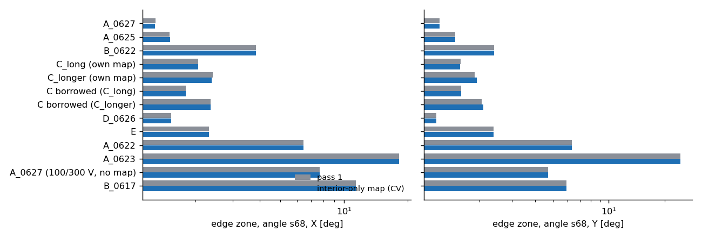

A_0627: X 0.922 -> 0.687 (26 %), Y 0.819 -> 0.609 (26 %); A_0625: X 0.876 -> 0.680 (22 %), Y 1.030 -> 0.668 (35 %); B_0622: X 0.942 -> 0.671 (29 %), Y 0.957 -> 0.723 (25 %); C_long (own map): X 1.128 -> 0.946 (16 %), Y 1.379 -> 1.179 (15 %); D_0626: X 1.466 -> 1.377 (6 %), Y 0.956 -> 0.752 (21 %); The same chambers on pass 1 are the reference; E, A 6-22, A 6-23, A 6-27 at 100 and 300 V and B 6-17 stay on pass 1 (identical columns). Quoted angles are the cross-validated ones (five time blocks, map and row constants trained without the event's block); events outside the map's region count with their pass-1 value. Positions: the mid-gap position residual s68 improves by 0-8 % where the map is used (one group, C borrowed from the longer row, Y, gets worse by 0.025 +- 0.013 mm, below 2 sigma); the mesh position p0 is not touched by the map.
map1/<run>/<subrun>/<det>/calib_bundle: the pass bundle, the bow['phi'] block with
outside = 'block', the row's w0 and kw measured with the map, and the pass-1 w0 and kw as fallback); the other 64 keep the pass-1 bundle.
215,797 events were recomputed in all 156 events.parquet (104,029 X and 115,108 Y angles from a map).domain_x, U >= 0); its Y view uses the whole domain.x_resc, y_resc). D and E railed tracks are flagged in x_railed, y_railed and not changed (the map still applies to D's).
C rows without their own map use the map of the nearest C row (map_borrowed).x/y_tan_theta, x/y_theta_deg, x/y_slope_reliable, x/y_bow_h, bow_h. Added: map_unit, map_variant, map_borrowed, map_used_x/y, x/y_railed, x/y_resc, x/y_tan_pass1.map1/<row>/map1_row.json). The bundle code path (bow_pairs with the fallback constants) gives
the same array as the pass-1 bundle's bow_pairs, bit for bit, on all 184 row/view pairs: True. It differs from the stored pass-1 value on
286 events (0.41 % of the events outside; up to 6e+08), the same events on which the pass-1 bundle itself does not
reproduce the stored table (stored value from the winner mapping, quality flag false); the table keeps the stored value.x_tan_map / y_tan_map to 0.0e+00 on 104,029 X and 115,108 Y
events (every event of every mapped row with a finite value).Gates: angle s68 not worse than pass 1 beyond 2 sigma (paired bootstrap); far fraction (|residual| > 3 s68 of pass 1) not higher; position s68 not worse. "map used" is the share of events inside the map's region.
| group | view | N | pass 1 | map (CV) | diff +- err | far %: pass 1 -> CV | position s68 [mm]: pass 1 -> CV | map used | gates |
|---|---|---|---|---|---|---|---|---|---|
| A_0627 | X | 28560 | 0.922 +- 0.006 | 0.687 +- 0.004 | -0.235 +- 0.006 | 1.3 -> 0.9 | 0.556 -> 0.522 | 100 % | ok |
| A_0627 | Y | 28560 | 0.819 +- 0.005 | 0.609 +- 0.004 | -0.210 +- 0.005 | 1.5 -> 0.9 | 0.535 -> 0.513 | 100 % | ok |
| A_0625 | X | 6279 | 0.876 +- 0.012 | 0.680 +- 0.009 | -0.196 +- 0.011 | 1.3 -> 0.8 | 0.415 -> 0.386 | 100 % | ok |
| A_0625 | Y | 6279 | 1.030 +- 0.017 | 0.668 +- 0.010 | -0.362 +- 0.018 | 1.2 -> 0.4 | 0.441 -> 0.404 | 100 % | ok |
| B_0622 | X | 21411 | 0.942 +- 0.006 | 0.671 +- 0.005 | -0.270 +- 0.006 | 1.7 -> 1.3 | 0.537 -> 0.511 | 99 % | ok |
| B_0622 | Y | 21411 | 0.957 +- 0.006 | 0.723 +- 0.004 | -0.235 +- 0.006 | 1.6 -> 1.2 | 0.515 -> 0.490 | 99 % | ok |
| C_long (own map) | X | 4981 | 1.128 +- 0.017 | 0.946 +- 0.015 | -0.181 +- 0.016 | 3.1 -> 2.5 | 0.476 -> 0.451 | 100 % | ok |
| C_long (own map) | Y | 4981 | 1.379 +- 0.019 | 1.179 +- 0.018 | -0.200 +- 0.018 | 2.2 -> 1.7 | 0.425 -> 0.405 | 100 % | ok |
| C_longer (own map) | X | 2191 | 1.237 +- 0.027 | 1.156 +- 0.026 | -0.082 +- 0.023 | 3.4 -> 3.3 | 0.452 -> 0.451 | 100 % | ok |
| C_longer (own map) | Y | 2191 | 1.583 +- 0.035 | 1.491 +- 0.032 | -0.092 +- 0.029 | 2.8 -> 2.5 | 0.523 -> 0.490 | 100 % | ok |
| C borrowed (C_long) | X | 6300 | 1.097 +- 0.017 | 0.808 +- 0.012 | -0.289 +- 0.015 | 3.1 -> 2.4 | 0.465 -> 0.438 | 100 % | ok |
| C borrowed (C_long) | Y | 6300 | 1.278 +- 0.017 | 1.056 +- 0.016 | -0.222 +- 0.016 | 2.8 -> 2.3 | 0.463 -> 0.439 | 100 % | ok |
| C borrowed (C_longer) | X | 947 | 1.424 +- 0.050 | 1.335 +- 0.052 | -0.089 +- 0.037 | 4.1 -> 4.2 | 0.548 -> 0.532 | 99 % | ok |
| C borrowed (C_longer) | Y | 947 | 1.955 +- 0.082 | 1.839 +- 0.063 | -0.115 +- 0.052 | 5.2 -> 5.1 | 0.555 -> 0.580 | 99 % | ok |
| D_0626 | X | 9235 | 1.466 +- 0.023 | 1.377 +- 0.021 | -0.089 +- 0.011 | 9.6 -> 9.5 | 0.695 -> 0.685 | 41 % | ok |
| D_0626 | Y | 9270 | 0.956 +- 0.010 | 0.752 +- 0.010 | -0.204 +- 0.010 | 3.2 -> 2.8 | 0.534 -> 0.521 | 99 % | ok |
| E | X | 5280 | 2.192 +- 0.046 | 2.192 +- 0.046 | +0.000 +- 0.000 | 9.8 -> 9.8 | 0.886 -> 0.886 | 0 % | ok |
| E | Y | 5352 | 1.512 +- 0.036 | 1.512 +- 0.036 | +0.000 +- 0.000 | 12.3 -> 12.3 | 0.730 -> 0.730 | 0 % | ok |
| A_0622 | X | 22186 | 3.398 +- 0.031 | 3.398 +- 0.031 | +0.000 +- 0.000 | 4.0 -> 4.0 | 0.898 -> 0.898 | 0 % | ok |
| A_0622 | Y | 22186 | 2.664 +- 0.022 | 2.664 +- 0.022 | +0.000 +- 0.000 | 4.3 -> 4.3 | 0.744 -> 0.744 | 0 % | ok |
| A_0623 | X | 3999 | 18.094 +- 0.444 | 18.094 +- 0.444 | +0.000 +- 0.000 | 6.7 -> 6.7 | 5.444 -> 5.444 | 0 % | ok |
| A_0623 | Y | 3999 | 35.372 +- 0.876 | 35.372 +- 0.876 | +0.000 +- 0.000 | 0.0 -> 0.0 | 12.704 -> 12.704 | 0 % | ok |
| A_0627 (100/300 V, no map) | X | 907 | 6.751 +- 0.309 | 6.751 +- 0.309 | +0.000 +- 0.000 | 4.2 -> 4.2 | 1.884 -> 1.884 | 0 % | ok |
| A_0627 (100/300 V, no map) | Y | 907 | 4.145 +- 0.179 | 4.145 +- 0.179 | +0.000 +- 0.000 | 7.7 -> 7.7 | 1.177 -> 1.177 | 0 % | ok |
| B_0617 | X | 104 | 12.814 +- 1.148 | 12.814 +- 1.148 | +0.000 +- 0.000 | 1.9 -> 1.9 | 19.139 -> 19.139 | 0 % | ok |
| B_0617 | Y | 104 | 8.373 +- 1.115 | 8.373 +- 1.115 | +0.000 +- 0.000 | 2.9 -> 2.9 | 4.327 -> 4.327 | 0 % | ok |
Where the map is used only (the groups with a partial region: D's X view for x >= 200 mm):
| group | view | N (map used) | pass 1 | map (CV) | diff +- err |
|---|---|---|---|---|---|
| A_0627 | X | 28464 | 0.922 +- 0.005 | 0.686 +- 0.004 | -0.236 +- 0.005 |
| A_0627 | Y | 28464 | 0.817 +- 0.005 | 0.608 +- 0.004 | -0.209 +- 0.005 |
| A_0625 | X | 6265 | 0.877 +- 0.012 | 0.680 +- 0.010 | -0.196 +- 0.012 |
| A_0625 | Y | 6265 | 1.029 +- 0.017 | 0.666 +- 0.010 | -0.362 +- 0.017 |
| B_0622 | X | 21289 | 0.938 +- 0.006 | 0.668 +- 0.005 | -0.270 +- 0.006 |
| B_0622 | Y | 21289 | 0.955 +- 0.006 | 0.721 +- 0.005 | -0.234 +- 0.006 |
| C_long (own map) | X | 4959 | 1.127 +- 0.017 | 0.945 +- 0.014 | -0.183 +- 0.017 |
| C_long (own map) | Y | 4959 | 1.378 +- 0.018 | 1.178 +- 0.017 | -0.201 +- 0.019 |
| C_longer (own map) | X | 2186 | 1.237 +- 0.028 | 1.155 +- 0.028 | -0.082 +- 0.022 |
| C_longer (own map) | Y | 2186 | 1.583 +- 0.035 | 1.490 +- 0.034 | -0.093 +- 0.029 |
| C borrowed (C_long) | X | 6273 | 1.095 +- 0.015 | 0.806 +- 0.011 | -0.288 +- 0.015 |
| C borrowed (C_long) | Y | 6273 | 1.276 +- 0.017 | 1.052 +- 0.016 | -0.223 +- 0.017 |
| C borrowed (C_longer) | X | 939 | 1.409 +- 0.047 | 1.309 +- 0.046 | -0.100 +- 0.036 |
| C borrowed (C_longer) | Y | 939 | 1.942 +- 0.078 | 1.824 +- 0.060 | -0.118 +- 0.052 |
| D_0626 | X | 3738 | 0.925 +- 0.019 | 0.777 +- 0.013 | -0.148 +- 0.016 |
| D_0626 | Y | 9223 | 0.954 +- 0.010 | 0.749 +- 0.010 | -0.205 +- 0.009 |


Each line is one row of the registry: angle s68 pass 1 and cross-validated map with the paired difference, far fraction, and mid-gap position s68 [mm].
| row | group | N | X: pass 1 | X: CV | X: diff +- err | X far % | X pos | Y: pass 1 | Y: CV | Y: diff +- err | Y far % | Y pos | gates |
|---|---|---|---|---|---|---|---|---|---|---|---|---|---|
| det2_det3_ovn_6-22__long_run__3 | A_0622 | 11972 | 3.369 | 3.369 | +0.000 +- 0.000 | 4.3 -> 4.3 | 0.895 -> 0.895 | 2.671 | 2.671 | +0.000 +- 0.000 | 4.6 -> 4.6 | 0.728 -> 0.728 | ok |
| det3_day_6-25__long_run__3 | A_0625 | 6279 | 0.876 | 0.680 | -0.196 +- 0.011 | 1.3 -> 0.8 | 0.415 -> 0.386 | 1.030 | 0.668 | -0.362 +- 0.018 | 1.2 -> 0.4 | 0.441 -> 0.404 | ok |
| det3_det4_ovn_6-23__long_run__3 | A_0623 | 3113 | 18.395 | 18.395 | +0.000 +- 0.000 | 6.8 -> 6.8 | 5.378 -> 5.378 | 40.220 | 40.220 | +0.000 +- 0.000 | 0.0 -> 0.0 | 13.761 -> 13.761 | ok |
| 3_p2_det1_ovn_6-27__long_run_p2_det1_sanity_check__3 | A_0627 | 14066 | 0.929 | 0.696 | -0.233 +- 0.008 | 1.2 -> 0.9 | 0.554 -> 0.522 | 0.809 | 0.605 | -0.204 +- 0.008 | 1.4 -> 0.8 | 0.542 -> 0.519 | ok |
| sat_det3 | A_0627 | 4654 | 0.905 | 0.669 | -0.237 +- 0.012 | 1.0 -> 0.7 | 0.558 -> 0.523 | 0.796 | 0.582 | -0.215 +- 0.012 | 1.5 -> 0.9 | 0.507 -> 0.484 | ok |
| det2_det3_ovn_6-22__long_run__2 | B_0622 | 10963 | 0.956 | 0.687 | -0.269 +- 0.008 | 1.7 -> 1.2 | 0.544 -> 0.512 | 0.970 | 0.740 | -0.231 +- 0.009 | 1.7 -> 1.3 | 0.523 -> 0.498 | ok |
| o22_long_det2 | B_0622 | 2159 | 0.960 | 0.670 | -0.290 +- 0.018 | 1.8 -> 1.5 | 0.535 -> 0.494 | 0.947 | 0.721 | -0.226 +- 0.020 | 1.5 -> 1.2 | 0.516 -> 0.485 | ok |
| det6_det7_ovn_6__longer_run__6 | C_longer (own map) | 2191 | 1.237 | 1.156 | -0.082 +- 0.023 | 3.4 -> 3.3 | 0.452 -> 0.451 | 1.583 | 1.491 | -0.092 +- 0.029 | 2.8 -> 2.5 | 0.523 -> 0.490 | ok |
| g_det6_long | C_long (own map) | 4981 | 1.128 | 0.946 | -0.181 +- 0.016 | 3.1 -> 2.5 | 0.476 -> 0.451 | 1.379 | 1.179 | -0.200 +- 0.018 | 2.2 -> 1.7 | 0.425 -> 0.405 | ok |
| g_det7_long | D_0626 | 2680 | 1.631 | 1.528 | -0.103 +- 0.022 | 9.1 -> 9.0 | 0.710 -> 0.688 | 1.036 | 0.814 | -0.221 +- 0.019 | 3.4 -> 2.8 | 0.566 -> 0.541 | ok |
| g_det4 | E | 3128 | 2.025 | 2.025 | +0.000 +- 0.000 | 9.4 -> 9.4 | 0.853 -> 0.853 | 1.419 | 1.419 | +0.000 +- 0.000 | 12.0 -> 12.0 | 0.749 -> 0.749 | ok |

71 rows with 37,913 gate events in total (50 with a map); view/gate combinations failing the 2 sigma rule: 0. The remaining 74 rows have fewer than 300 gate events (8,869 in total) and enter only the pooled groups.
None of them fails a gate.
Events inside the active area but within 30 mm of its border, which no map saw in its fit. Outside the map's region they are pass 1 by construction; the few that fall just inside the region (a few percent) use the map.
| group | view | N | map used % | pass 1 | interior-only map (CV) | diff +- err |
|---|---|---|---|---|---|---|
| A_0627 | X | 3413 | 1.8 | 1.295 | 1.287 | -0.009 +- 0.006 |
| A_0627 | Y | 3413 | 1.8 | 1.222 | 1.216 | -0.006 +- 0.004 |
| A_0625 | X | 1189 | 1.1 | 1.512 | 1.516 | +0.004 +- 0.004 |
| A_0625 | Y | 1189 | 1.1 | 1.482 | 1.480 | -0.002 +- 0.009 |
| B_0622 | X | 4462 | 1.5 | 3.845 | 3.845 | +0.000 +- 0.002 |
| B_0622 | Y | 4462 | 1.5 | 2.398 | 2.392 | -0.006 +- 0.005 |
| C_long (own map) | X | 1600 | 1.4 | 2.061 | 2.055 | -0.006 +- 0.011 |
| C_long (own map) | Y | 1600 | 1.4 | 1.579 | 1.573 | -0.006 +- 0.012 |
| C_longer (own map) | X | 682 | 2.2 | 2.402 | 2.384 | -0.018 +- 0.021 |
| C_longer (own map) | Y | 682 | 2.2 | 1.887 | 1.930 | +0.043 +- 0.025 |
| C borrowed (C_long) | X | 1772 | 2.2 | 1.797 | 1.793 | -0.004 +- 0.009 |
| C borrowed (C_long) | Y | 1772 | 2.2 | 1.594 | 1.598 | +0.004 +- 0.009 |
| C borrowed (C_longer) | X | 227 | 1.3 | 2.347 | 2.347 | +0.000 +- 0.002 |
| C borrowed (C_longer) | Y | 227 | 1.3 | 2.063 | 2.099 | +0.037 +- 0.051 |
| D_0626 | X | 1989 | 2.5 | 1.531 | 1.533 | +0.002 +- 0.004 |
| D_0626 | Y | 2027 | 4.2 | 1.169 | 1.169 | +0.000 +- 0.006 |
| E | X | 812 | 0.0 | 2.308 | 2.308 | +0.000 +- 0.000 |
| E | Y | 828 | 0.0 | 2.385 | 2.385 | +0.000 +- 0.000 |
| A_0622 | X | 3573 | 0.0 | 6.459 | 6.459 | +0.000 +- 0.000 |
| A_0622 | Y | 3573 | 0.0 | 6.312 | 6.312 | +0.000 +- 0.000 |
| A_0623 | X | 1245 | 0.0 | 18.151 | 18.151 | +0.000 +- 0.000 |
| A_0623 | Y | 1245 | 0.0 | 24.341 | 24.341 | +0.000 +- 0.000 |
| A_0627 (100/300 V, no map) | X | 125 | 0.0 | 7.661 | 7.661 | +0.000 +- 0.000 |
| A_0627 (100/300 V, no map) | Y | 125 | 0.0 | 4.692 | 4.692 | +0.000 +- 0.000 |
| B_0617 | X | 58 | 0.0 | 11.378 | 11.378 | +0.000 +- 0.000 |
| B_0617 | Y | 58 | 0.0 | 5.911 | 5.911 | +0.000 +- 0.000 |

| group | view | railed N | mean residual x sign(tan) [deg]: pass 1 | map CV x rescale | s68: pass 1 | s68: CV x rescale |
|---|---|---|---|---|---|---|
| C_long (own map) | X | 209 | -0.143 | +0.070 | 1.113 | 1.040 |
| C_long (own map) | Y | 924 | -0.375 | +0.007 | 1.185 | 1.074 |
| C_longer (own map) | X | 444 | -0.385 | -0.016 | 1.158 | 1.155 |
| C_longer (own map) | Y | 492 | -0.373 | +0.023 | 1.536 | 1.498 |
| C borrowed (C_long) | X | 607 | -0.203 | -0.065 | 1.176 | 0.951 |
| C borrowed (C_long) | Y | 942 | -0.202 | +0.031 | 1.338 | 1.231 |
| C borrowed (C_longer) | X | 222 | -0.432 | -0.049 | 1.207 | 1.324 |
| C borrowed (C_longer) | Y | 253 | -0.289 | -0.216 | 1.677 | 1.752 |
Code: rerun/calib/phimap/map1/ (build_map1.py, gates.py, this script). Data: /media/ucla/work/claude-jobs/d006ab29/map1.